CMC Wizard FrameShop
FrameReady is integrated with the Mat Designer program ‘FrameShop’ by Wizard.
-
Allows you to create Work Orders in FrameReady, attach a Wizard FrameShop template, and then import those Work Orders directly into Wizard FrameShop.
-
Also allows you to create a Frame project inside of Wizard FrameShop with a template, openings, reveals, and multiple Frame and Mat items. From there you can import that Frame project directly into FrameReady’s Work Order module and it will save the preview image in the Work Order, as well as import all of the information from FrameShop.
-
Wizard 8000 and 9000 series cutters
-
Wizard FrameShop software available only for Windows
-
See also: CMC Wizard FrameShop Mac Support

Requirements
-
Wizard FrameShop software is available only for Windows.
-
Supported by the Wizard 8000 and 9000 series cutters.
-
Requires FrameReady 13 and FileMaker Pro 19.4 or greater.
Video: Wizard FrameShp Integration Overview
Before You Begin...
Before using the Wizard FrameShop integration in FrameReady
-
Make sure that you have the Wizard FrameShop application installed on your computer.
The Wizard Frameshop application is currently only available for Windows, not Mac. When installing the Wizard software, follow the prompts to install the application in the default installation folder.
Tip: To export a WZ2 file from your Mac: CMC Wizard FrameShop Mac Support
-
After you have completed the installation for the Wizard Frameshop application, create a folder in the root of your C:/ drive on your Windows computer.
Name the folder WIZ . -
Set the folder permissions to read and write access so that Wizard Frameshop can create and access files in this directory: right-click the WIZ folder and choose Properties. In the Attributes section, disable Read Only if it is selected.
This is where your .wz2 Frameshop files will be created and stored for your Work Orders in FrameReady.
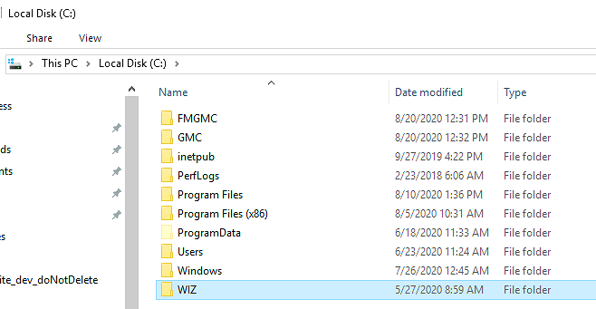
-
Open the Wizard FrameShop installation folder, which is located in “C:/Program Files (x86)/Wizard”.
Right-click the Wizard folder and choose Properties.
In the "Wizard Properties" window, open the Security tab, and confirm that read/write access is enabled for the group 'Users'. Click OK to close.
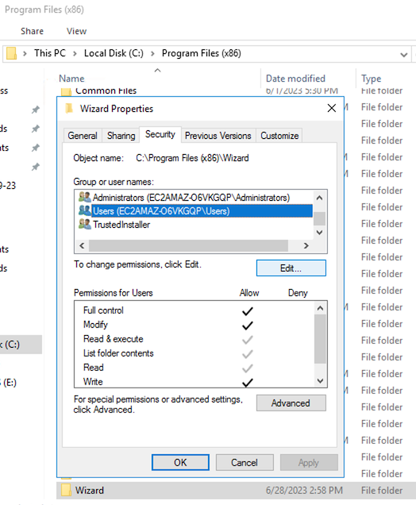
-
Next, go into the Wizard folder and create a new folder named: Mats .
The new Mats folder should inherit the permissions from the parent Wizard folder, but double-check to make sure that the group 'Users' also has read/write access to this folder.
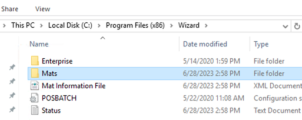
How to Set up Pricing for your Wizard Templates
-
You can add your own price on each of the Wizard templates in the Price Codes file. This allows you to charge a different amount for each Wizard template that you add on a Work Order based on what template it is. Some templates being more complex than others, you may want to charge a different amount for them.
-
To setup the Wizard integration in FrameReady, you will need to select one of two Work Order default preferences in the ‘WO Defaults’ tab.
-
Open FrameReady and on the Main Menu, in the Work Orders section, open the Options tab.
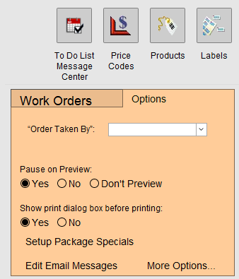
-
Click the More Options... button.
The "Work Order Options" window opens. -
Open the WO Defaults tab and, under Computerized Mat Cutter, select Work Order to Wizard FrameShop.
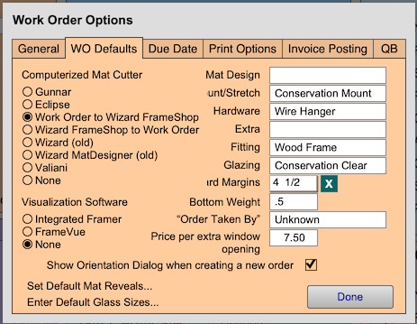
-
New in FrameReady 13: You can now select the values “Wizard (old)" and "Wizard MatDesigner (old)" from the CMC list and use the older Wizard integration that creates .wiz files instead of .wz2 files.
-
Click Done.
-
Now that you have your Wizard CMC preference selected, go into a Work Order and click the WIZ PRICE button (left-hand side of the screen in Work Orders).
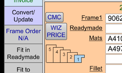
-
The WIZ PRICE button opens the Price Codes file.
If it is the first time that you are using the Wizard integration with the software, the program will prompt you: “You currently do not have your price codes set up for the Wizard templates. Would you like to run the Wizard set up script to import the price codes for the templates?”
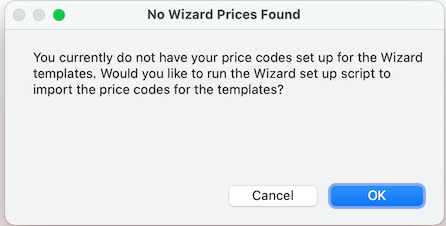
-
When you click the OK button, FrameReady creates the templates that are available to you in the Wizard FrameShop program in the Price Codes table. After they have been created, they are displayed as a found set, in list view, in the Price Codes file.
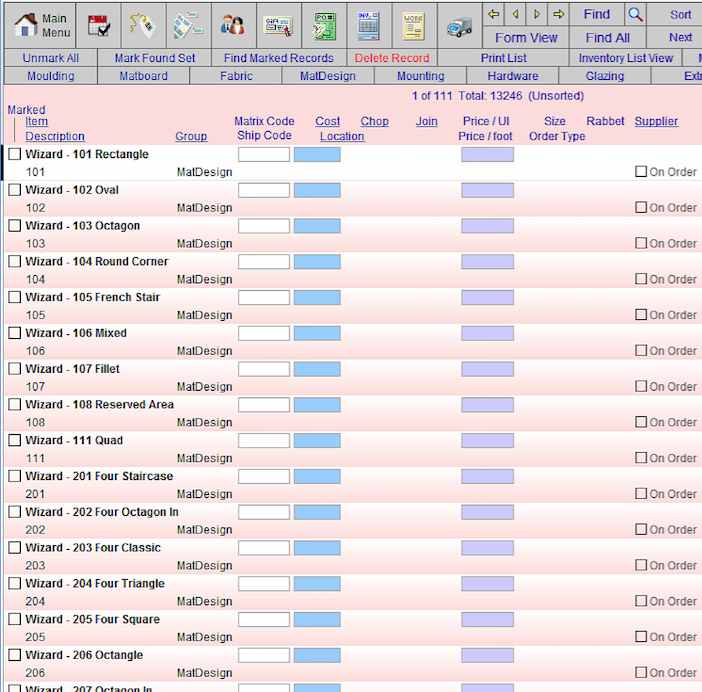
-
Click the template you wish to edit, then click in the Set Price field to edit the price.
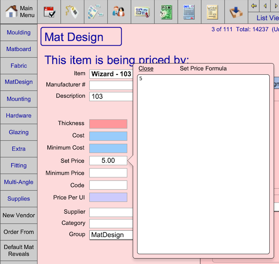
-
After adjusting the Set Price, click the List View button (top center) to return to the list of Wizard templates.
-
Continue editing your Wizard templates.
You can also perform a find in the Price Codes file for Wizard in the Item field. Doing so will list all of the pre-loaded Wizard templates (that are also found in Wizard FrameShop). From there you can click on the template you wish to set the price of and click into the Set Price field to edit the retail price.
There are 2 ways to use the Wizard FrameShop integration
Choose between starting in FrameReady or starting in FrameShop
-
To setup the Wizard integration in FrameReady, you will need to select one of two Work Order default preferences, in the WO Defaults tab.
-
You must choose to either:
-
Start in FrameReady and then move data into FrameShop,
-
OR
-
Start in FrameShop and then move data into FrameReady.
-
-
Each option has its own initial setup method.
-
Option 1: Create Work Orders in FrameReady, attach a Wizard FrameShop template and import those Work Orders directly into Wizard FrameShop.
-
Option 2: Create a Frame project inside of Wizard FrameShop with a template, openings, reveals, and multiple Frame and Mat items. From there, you can import that Frame project directly into FrameReady’s Work Order module and it will save the preview image in the Work Order, as well as import all of the information from FrameShop.
-
When establishing your Work Order Defaults, you can select one method or the other. However, while in the Work Order file you can toggle between the two options. Click here for instructions.
Option 1: Push data from FrameReady into Wizard FrameShop
This option allows you to create Work Orders in FrameReady, attach a Wizard FrameShop template and import those Work Orders directly into Wizard FrameShop.
Initial Setup
-
Open FrameReady and on the Main Menu, in the Work Orders section, open the Options tab.
-
Click the More Options... button.
The "Work Order Options" window opens. -
Open the WO Defaults tab and, under Computerized Mat Cutter, select Work Order to Wizard FrameShop.
-
Click Done.
Work Flow
You must either prepare a new Work Order from scratch or use a Work Order already in the system.
Before pushing data into Wizard FrameShop: the Work Order must have an opening width and height as well as a matboard size.
-
Locate an existing Work Order or create a new one.
-
The Work Order must have an opening width and height, as well as a Mat size in order to push data into Wizard FrameShop.
-
When you have finished preparing the Work Order, and you are ready to assign the Wizard template you wish to use, click the CMC button (left hand side of the Work Order screen).
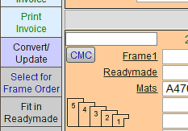
-
A new window appears showing all nine template menus from the Wizard FrameShop program.
Note: These templates also include the brand new templates that were not in earlier versions of Wizard FrameShop. -
Locate the template that you want to use and click the image button to add it to the Work Order.
You will see the template name directly above the CMC button. You will also see the template you selected in the Mat Design field where the pricing from the Price Codes module will load in and total up with the price of your Work Order.
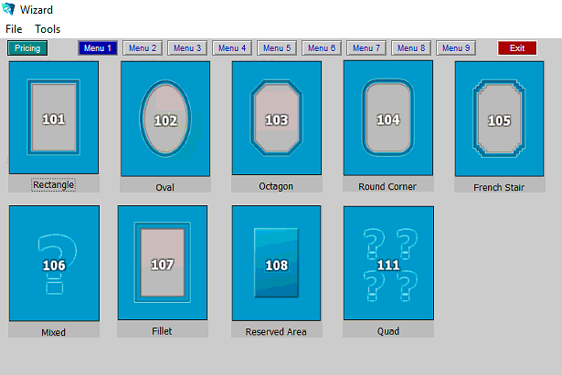
-
After you have your template selected and information all entered, you are ready to save your Work Order out as a Wizard FrameShop compatable ."wz2" file.
In the file menu bar, click Scripts and select Create WZ2 File.
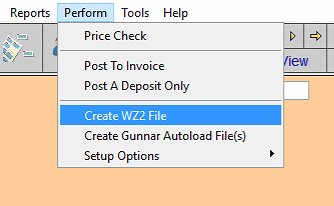
-
Wizard FrameShop opens (probably above your FrameReady program).
Click New Mat Design and then, in the top menu, click File and select Import Wizard File to Editor.
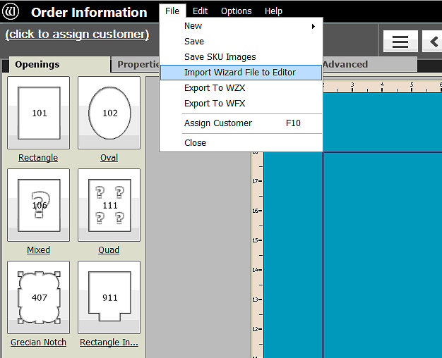
-
A file dialog window appears to select a file for import.
Use the file dialog window to navigate to the folder that we created on the C:/ drive in setup called ‘WIZ’. The .wz2 file that you created in FrameReady is named to match the Work Order number, i.e. Work Order Number.wz2, for example: Q0079.wz2.
Select the Work Order number that you wish to import.
(To make it easier, you can sort the list by clicking Date Modified to list the most recent orders at the top.)
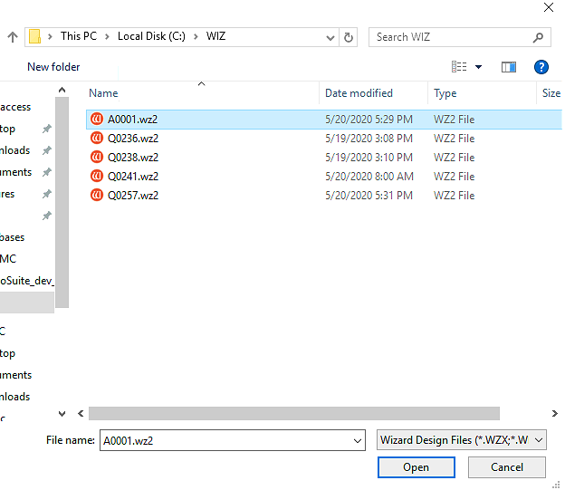
-
Once you have selected the Work Order .wz2 file that you want to import, FrameShop loads the details from the file.
You will see that the template that you selected in FrameReady has been applied to this opening in the project in FrameShop.
You will also see the dimensions you entered for the Mat and for the opening, as well as borders in FrameReady matching up in the FrameShop project.
Option 2: Push data from Wizard FrameShop into FrameReady
This option allows you to design a project in FrameShop and then, when ready, to move that information into FrameReady.
Initial Setup
-
Open FrameReady and on the Main Menu, in the Work Orders section, open the Options tab.
-
Click the More Options... button.
-
Open the WO Defaults tab and, under Computerized Mat Cutter, select Wizard FrameShop to Work Order.
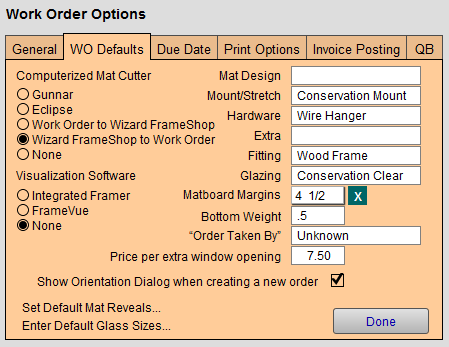
-
Click Done.
Work Flow
Unlike pushing information from FrameReady into Wizard, you do not need to have any information filled in the Work Order before bringing in data from Wizard FrameShop.
-
Start in FrameReady.
Locate an existing Work Order or create a new one. -
Unlike when pushing information from FrameReady into Wizard, you do not need to have any information filled in in the Work Order in order to bring in data from Wizard FrameShop.
When you are ready to begin the process, click the CMC button on the Work Order (middle left-hand side).
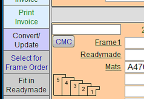
-
The Wizard Frameshop program launches in integration mode.
The only thing that is different about integration mode in Wizard FrameShop is that you will see a button at the top of the application screen labelled Back to POS. This is the button that you will push once you have all of your information added in Wizard FrameShop and you are ready to push the info into FrameReady.
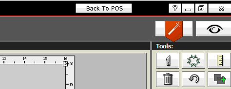
-
Once you have clicked the CMC button in FrameReady and launched Wizard FrameShop, the "New Openings Design" window opens.
This is where you can begin entering project information. To enter the mat size, enter the mat dimensions at the bottom under Outside Size.
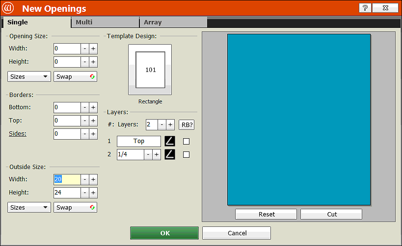
-
To add an opening based on a Wizard template, click the template thumbnail image under Template Design. This opens a window with all the Wizard templates; you can select one of the templates and it will add the template to your opening dimensions that you enter.
Enter the opening dimensions under the Opening Size fields. After you have entered dimensions for your mat, selected a template and entered your opening size dimensions, then you can click the green OK button to create your project.
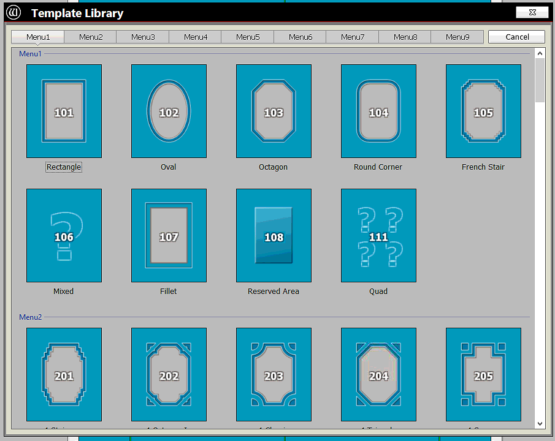
-
The mat size, opening size, borders, and the Wizard template number are all imported directly into the respective fields in FrameReady when you click the Back to POS button.
You can also add Visualization information to push into FrameReady: click the eyeball icon (top right corner of the Wizard Order Information screen).
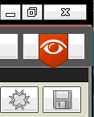
-
You can load an artwork image into your frame to visualize what your project will look like: click Load File Image (left sidebar). This image appears inside the opening, which you can view on your preview image of the project by opening the Preview tab.
On the Mats and Frames tab you can add and select the SKUs/Items for your Frames, Mats, and Fillets. To add a Frame or Mat/Fillet, click the ‘+’ icon on the left sidebar. Click the magnifying glass on the new field that you have added to open the pop up window with the list of Item numbers to select from. Select an item number of a Frame or Mat and it will load the Item number into your project.
The mats and frames you add are also imported into the Frame and Mat areas in FrameReady when you click the Back to POS button (when you are ready to push your data).
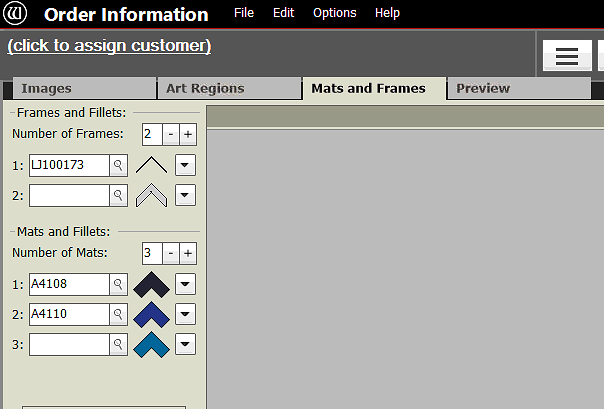
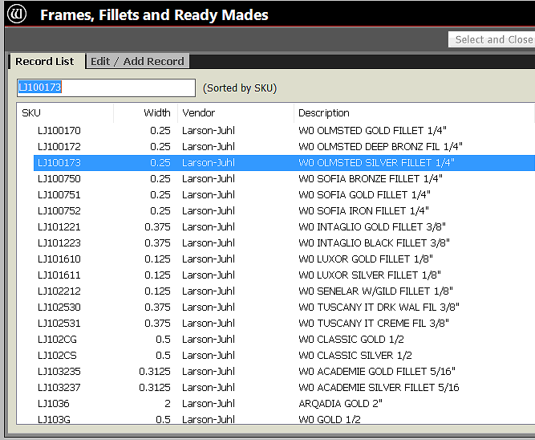
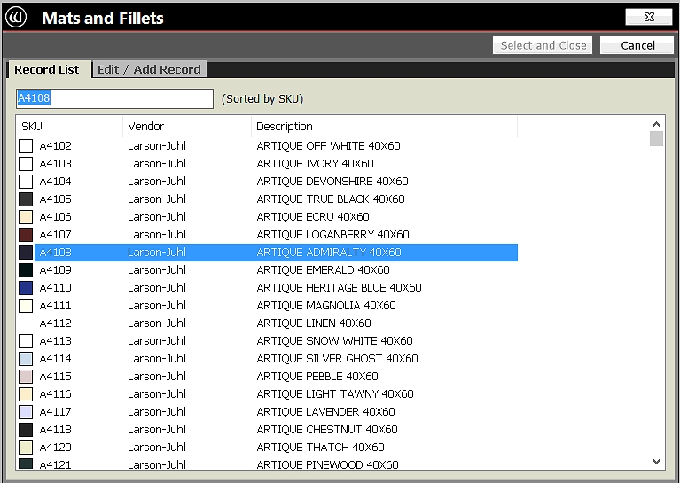
-
In the Preview tab, you can see what your project will look like based on the parameters that you have selected in Wizard FrameShop.
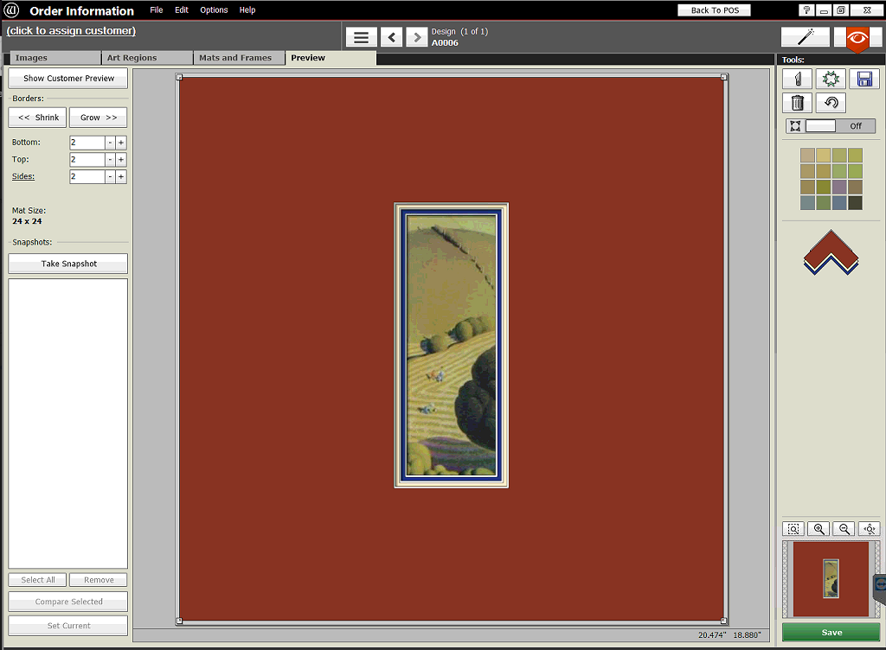
This image is also imported into FrameReady when you are finished creating your project and then click the Back to POS button. The preview image appears in the Picture tab (bottom right corner of the Work Order screen).
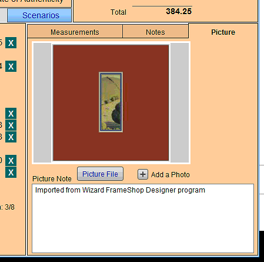
-
When you are finished and you want to push the data into FrameReady, click the Back to POS button (the top of the screen). The Wizard FrameShop program closes and reveals the FrameReady window.
FrameReady displays a dialog window: "Click continue to import data from Mat Designer or cancel to return to work order screen without importing".
Click the Continue button and the information from your Wizard project is imported into FrameReady.
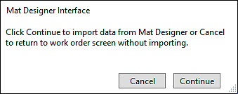
-
If any of the moulding or matboard items that you added in Wizard Frameshop do not exist in FrameReady, then a message is added to the Notes tab on the Work Order screen. This is to let you know that you need to add those items into your Price Codes file (in order to have them price correctly in the Work Order now that they have imported).
If there are duplicate items in your Price Codes file, then an alert appears: "More than 1 record matched exactly or was similar to your import item. Please select the record from the Price Codes file that you wish to use." From the list onscreen, click the appropriate item.
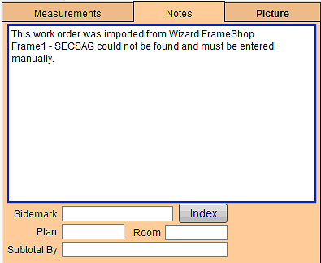
-
The template chosen for the project is added under the Mat Design field of the Work Order.
When a template is imported from Wizard FrameShop into the Mat Design area in the Work Order, the price of the template is added to the grand total Work Order price; as are any Frames and Mats chosen in FrameShop and imported into the Work Order. -
You can set your own prices for each one of the Wizard templates in the Price Codes file.
Simply do a find for Wizard in the Item field in Price Codes and set your template prices. When a template is imported from Wizard FrameShop into the Mat Design area in the Work Order, the price of the template is added to the grand Work Order price. The Frames and Mats you have selected in FrameShop and imported into the Work Order will also add their price onto the total retail price.
How to Toggle Between Starting in Work Order vs Starting in FrameShop
-
Select Perform on the Menubar at the top of the screen.
-
Select Toggle Wizard -> Work Order Options from the list of options on the pull down list.
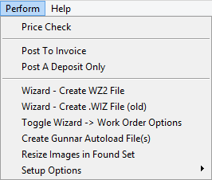
-
A dialog window appears letting you know that you have switched your default to the opposite default, depending on which option was the originally set Default.
© 2023 Adatasol, Inc.